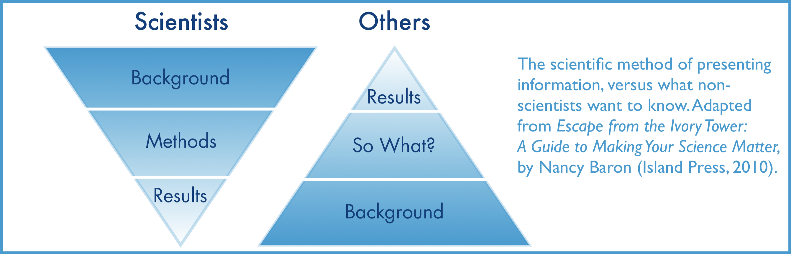
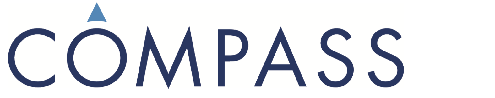
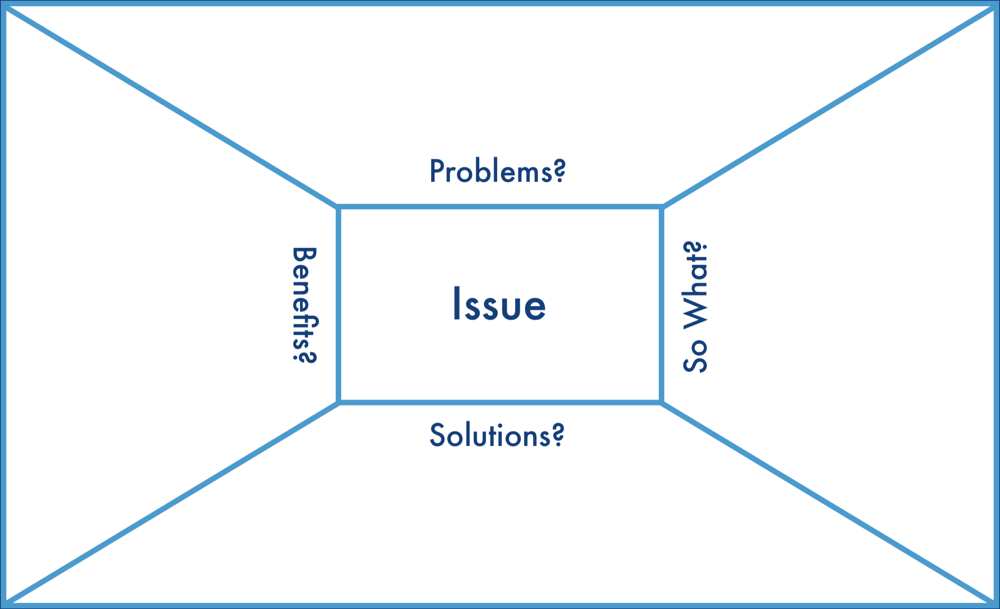

Learning Objective
- Discuss about the importance of science communication.
- Distinguish between how scientist communicate sciences vs how the rest of the world communicates.
- Introduce and practice using the Message Box as a tool to communicate science to a specific audience.
9.1 Communicating Science
How we communicate our science with the rest of the world matters! There are many different reasons and ways to engage and practice science communication. From writing a blog post as a creative outlet to posting in social media to make science accessible to a broader audience. Science communication is more and more becoming a formal responsibility within researchers as funding organizations encourage or require scientist to do outreach of their work (Borowiec (2023)).
Communication can come easy, but doing it well is hard. As scientist, it is important to spread the word of our discoveries, engage with non-scientist audiences, and build empathy and trust on what we do (PLOS SciCom). This way make sure the world understand how important, necessary and meaningful science is.
9.1.1 Scholarly publications
“The ingredients of good science are obvious—novelty of research topic, comprehensive coverage of the relevant literature, good data, good analysis including strong statistical support, and a thought-provoking discussion. The ingredients of good science reporting are obvious—good organization, the appropriate use of tables and figures, the right length, writing to the intended audience— do not ignore the obvious” - Bourne 2005
Peer-reviewed publication is the primary mechanism for direct and efficient communication of research findings. Other scholarly communications include abstracts, technical reports, books and book chapters. These communications are largely directed towards students and peers; individuals learning about or engaged in the process of scientific research whether in a university, non-profit, agency, commercial or other setting.
The following tabling is a good summary of ‘10 Simple Rules’ for writing research papers (adapted from Zhang 2014, published in Budden and Michener, 2017)
|
“Design a project with an ultimate paper firmly in mind” |
|
“Fewer but more significant papers serve both the research community and one’s career better than more papers of less significance” |
|
“This is critical for determining the organization of the paper and the level of detail of the story, so as to write the paper with the audience in mind.” |
|
“The foundation of ‘’lively’’ writing for smooth reading is a sound and clear logic underlying the story of the paper.” “An effective tactic to help develop a sound logical flow is to imaginatively create a set of figures and tables, which will ultimately be developed from experimental results, and order them in a logical way based on the information flow through the experiments.” |
|
Present the central underlying hypotheses; interpret the insights gleaned from figures and tables and discuss their implications; provide sufficient context so the paper is self-contained; provide explicit results so readers do not need to perform their own calculations; and include self-contained figures and tables that are described in clear legends |
|
“the delivery of a message is more rigorous if the writing is precise and concise” |
|
“concentrate on spelling, grammar, usage, and a ‘’lively’’ writing style that avoids successions of simple, boring, declarative sentences” |
|
Review, revise and reiterate. “…put yourself completely in the shoes of a referee and scrutinize all the pieces—the significance of the work, the logic of the story, the correctness of the results and conclusions, the organization of the paper, and the presentation of the materials.” |
|
“…collect feedback and critiques from others, e.g., colleagues and collaborators.” |
|
Treat reviewers as collaborators and respond objectively to their criticisms and recommendations. This may entail redoing research and thoroughly re-writing a paper. |
Even though reporting our results in a clear and efficient way through scholarly publications is important, the ways scientist communicate is not how the rest of the rest of the world typically communicates. In a scientific paper, we establish credibility in the introduction and methods, provide detailed data and results, and then share the significance of our work in the discussion and conclusions. But the rest of the world leads with the impact, the take home message. An example of this are newspaper headlines.
“But the rest of the world leads with the conclusions, because that’s what people want to know. What are your findings and why is this relevant to them? In other words, what’s your bottom line?”

9.1.2 Other communications
Communicating your research outside of peer-reviewed journal articles is increasingly common, and important. These non academic communications can reach a more broad and diverse audience than traditional publications (and should be tailored for specific audience groups accordingly), are not subject to the same pay-walls as journal articles, and can augment and amplify scholarly publications. For example, this twitter announcement from Dr Heather Kropp, providing a synopsis of their synthesis publication in Environmental Research (note the reference to a repository where the data are located, though a DOI would be better).

Whether this communication occurs through blogs, social media, or via interviews with others, developing practices to refine your messaging is critical for successful communication. One tool to support your communication practice is ‘The Message Box’ developed by COMPASS, an organization that helps scientists develop communications skills in order to share their knowledge and research across broad audiences without compromising the accuracy of their research.
9.2 The Message Box


The Message Box is a tool that helps researchers take the information they hold about their research and communicate it in a way that resonates with the chosen audience. It can be used to help prepare for interviews with journalists or employers, plan for a presentation, outline a paper or lecture, prepare a grant proposal, or clearly, and with relevancy, communicate your work to others. While the message box can be used in all these ways, you must first identify the audience for your communication.
“Whether a journalist, a policymaker, a room of colleagues at a professional meeting, or a class of second-graders—doesn’t have deep knowledge of your subject matter. But that doesn’t mean you should explain everything you know in a fire hose of information. In fact, cognitive research tells us that the human brain can only absorb three to five pieces of information at a time. So prioritize what you share based on what your audience needs to know. Your goal as you fill out your Message Box is to identify the information that is critical to your audience—what really matters to them—and share that. Effective science communication is less about expounding on all the exciting details that you might want to convey, and more about knowing your audience and providing them with what they need or want to know from you.”
The Message Box comprises five sections to help you sort and distill your knowledge in a way that will resonate with your (chosen) audience.
The five sections of the Message Box are provided below. For a detailed explanation of the sections and guidance on how to use the Message Box, work through the Message Box Workbook
9.2.1 Message Box Sections
The Issue
The Issue section in the center of the box identifies and describes the overarching issue or topic that you’re addressing in broad terms. It’s the big-picture context of your work. This should be very concise and clear; no more than a short phrase. You might find you revisit the Issue after you’ve filled out your Message Box, to see if your thinking on the overarching topic has changed since you started.
- Describes the overarching issue or topic: Big Picture
- Broad enough to cover key points
- Specific enough to set up what’s to come
- Concise and clear
- ‘Frames’ the rest of the message box
The Problem
The Problem is the chunk of the broader issue that you’re addressing in your area of expertise. It’s your piece of the pie, reflecting your work and expert knowledge. Think about your research questions and what aspect of the specific problem you’re addressing would matter to your audience. The Problem is also where you set up the So What and describe the situation you see and want to address.
- The part of the broader issue that your work is addressing
- Builds upon your work and expert knowledge
- Try to focus on one problem per audience
- Often the Problem is your research question
- This section sets you up for So What
The So What
The crux of the Message Box, and the critical question the COMPASS team seeks to help scientists answer, is “So what?” Why should your audience care? What about your research or work is important for them to know? Why are you talking to them about it? The answer to this question may change from audience to audience, and you’ll want to be able to adjust based on their interests and needs. We like to use the analogy of putting a message through a prism that clarifies the importance to different audiences. Each audience will be interested in different facets of your work, and you want your message to reflect their interests and accommodate their needs. The prism below includes a spectrum of audiences you might want to reach, and some of the questions they might have about your work.
- This is the crux of the message box
- Why should you audience care?
- What about your research is important for them to know?
- Why are you talking to them about it?

The Solution
The Solution section outlines the options for solving the problem you identified. When presenting possible solutions, consider whether they are something your audience can influence or act upon. And remind yourself of your communication goals: Why are you communicating with this audience? What do you want to accomplish?
- Outlines the options for solving the Problem
- Can your audience influence or act upon this?
- There may be multiple solutions
- Make sure your Solution relates back to the Problem. Edit one or both as needed
The Benefit
In the Benefit section, you list the benefits of addressing the Problem — all the good things that could happen if your Solution section is implemented. This ties into the So What of why your audience cares, but focuses on the positive results of taking action (the So What may be a negative thing — for example, inaction could lead to consequences that your audience cares about). If possible, it can be helpful to be specific here — concrete examples are more compelling than abstract. Who is likely to benefit, and where, and when?
- What are the benefits of addressing the Problem?
- What good things come from implementing your Solution?
- Make sure it connects with your So What
- Benefits and So What may be similar
Finally, to make you message more memorable you should:
- Support your message with data
- Limit the use of numbers and statistics
- Use specific examples
- Compare numbers to concepts, help people relate
- Avoid jargon
- Lead with what you know

In addition to the Message Box Workbook, COMPASS have resources on how to increase the impact of your message (include important statistics, draw comparisons, reduce jargon, use examples), exercises for practicing and refining your message and published examples.
9.3 Resources
DataONE Webinar: Communication Strategies to Increase Your Impact from DataONE on Vimeo.
- Budden, AE and Michener, W (2017) Communicating and Disseminating Research Findings. In: Ecological Informatics, 3rd Edition. Recknagel, F, Michener, W (eds.) Springer-Verlag
- COMPASS Core Principles of Science Communication
- Example Message Boxes
9.4 Your Turn
Let’s take a look on how the Message Box looks in practice.
Look into real examples of scienctist using the message box here.
Think about your synthesis project and a potential audience you would like to communicate the results. Define your audience and start filling in the different components of the Message Box.
Note: This is just the first iteration to help your think about your work in a different way.